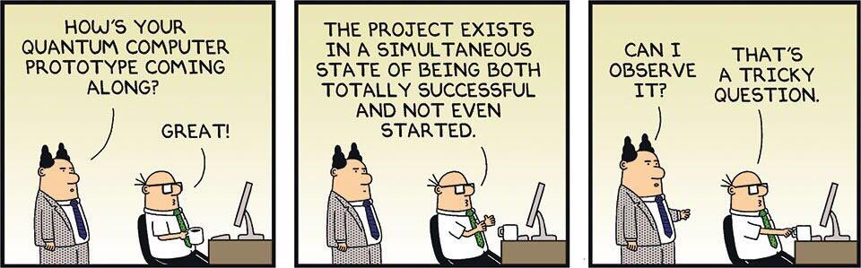

I like designing architectures for quantum computers
I am a 2nd-year engineering student majoring in Electronics at PES University. I love to work on anything that has the words "quantum" and "machine learning" in them -- I really am a chaotic researcher in that respect. I like to work on a wide range of topics and usually I like to find naive intersections of well-established fields.
Office
Photonics and Quantum Technology Lab,
B501, BE Block
PES University, Bengaluru, India
pkulkarni2425 [at] gmail [dot] com
Prateek P Kulkarni
Research
I'm heavily interested in quantum computing, machine learning and network-on-chip architectures. Lately, I have also been invested in combinatorics on words and cryptography. However, often my attention span lasts so long that it is apt to say my hop count tends to infinity! Usually my research tends to span two or multiple of these areas.
Update: My current focus is on superconducting quantum computers. More specifically, architectures. (@ FIST Group, IISc)
Current Positions
- Research Assistant, Jun. 2024-
Joining the Photonics & Quantum Technology Lab at PES University under Prof. Kaustav Bhowmick! The work will entail quantum machine learning and possible applications elsewhere. - Visiting Research Student, Mar. 2024-
Part of the Future Computing Systems Lab (FIST), Dept. of Computer Science and Automation, Indian Institute of Science (IISc), Bangalore under Prof. Sumit Kumar Mandal, exploring the aspects of quantum interconnects. - Long-Term Research Intern, Jan. 2024-
At the Center for Information Security, Forensics and Cyber Resilience (ISFCR), PES University. Part of the Cryptography and Blockchain Lab, led by Prof. Indu Radhakrishnan, working on quantum/post-quantum cryptography. - [Upcoming]Extra: Additionally, I am also starting to work on Combinatorics on Words with Prof. Sivasankar M!
News
- Apr. 2024 Attended a really cool talk from Dr. Joseph Bardin on quantum computing and microwave engineering, thanks to IEEE IISc MTT/AP-S Student Branch!
- Feb. 2024 Was awarded one of the 10 funded long-term positions at C-ISFCR, aiming to investigate aspects of quantum/post-quantum cryptography.
- Jan. 2024 Attended the "Present and Future Computing Systems" workshop held at IISc, Dept. of Computer Science and Automation.
 Source: Dilbert.com